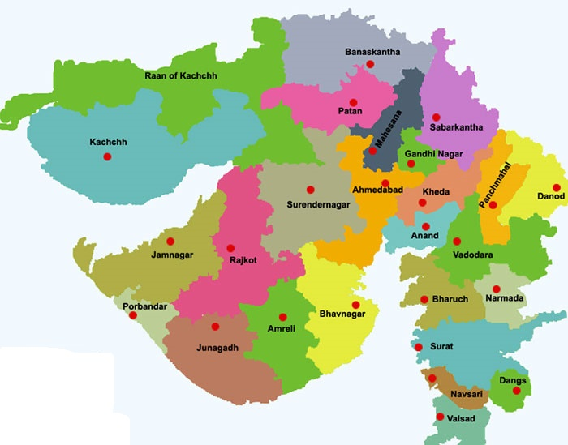

LET'S HAVE A LOOK AT THE TOUR MAP
WHERE TO VISIT , WHAT TO SEE?
SOME HOT PICKS(#HAVE_TO_VISIT)
- GIR NATIONAL PARK - POPULAR FOR THE ASIATIC LION
- SOMNATH TEMPLE - 12 JYOTIRLINGAS OF LORD SHIVA
- RANN OF KACHCHH/KUTCH - MESMERIZING WONDER OF SAND AND SALT.FLAMINGOS VISIT HERE DURING WINTERS
- AHMEDABAD - ALL OF GANDHIJI'S DWELLINGS.FAMOUS FOR INTERNATIONAL KITE FEST
- SAPUTARA - THE ONLY HILL STATION ,MONSOONS ARE THE BEST TIME TO VISIT
- LAXMI VILAS PALACE - MAHARAJA FATEH SINGH MUSEUM, IDEAL FOR HISTORY BUFFS
- DWARKA - ACCORDING TO MAHABHARATA, USED TO BE THE UNDERWATER CITY OF LORD KRISHNA
- RANI KI VAV - UNESCO WORLD HERITAGE SITE, ANCIENT STEP WELL
- LOTHAL - INDUS VALLEY CIVILIZATION
- BHUJ - MARVEL AT INTERIOR DESIGN
- JUNAGARH - FORT CITY
- CHAMPANER-PAVAGADH PARK - UNESCO WORLD HERITAGE SITE, COMBINES BOTH HINDU AND ISLAMIC ARCHITECTURE
- SURAT - COMMERCIAL HUB OF GUJRAT
- DIU - BEST BEACH DESTINATION
- ANAND - MYSTICAL PLACE TO GET RID OF THE BUSY CITY LIFE
- RAJKOT - HISTORY UNBOXES HERE ITSELF
- MANDVI BEACH - ABSOLUTE BLISS AND SERENITY ALONG THE COAST OF ARABIAN SEA
- MARINE NATIONAL PARK - EXOTIC BIRDS AND VIBRANT CORALS AT THE SEA BED
- PORBANDAR - BIRTH PLACE OF MAHATMA GANDHI
- GANDHINAGAR - RICH CULTURAL HERITAGE
- WANKANER - RAJPUT CULTURE AND HERITAGE
- GIRNAR - MIX OF FINE GOLDEN BROWN SAND AND LUSH GREEN ENVIRONS
- LAKHOTA FORT - REEKING OF ANCIENTNESS
- SIDI SAIYAD MOSQUE - INTRICATE LATTICEWORK
OTHER_ATTRACTIONS
- DHOLAVIRA - EXTEND OF INDUS VALLEY CIVILIZATION
- MODHERA - SPIRITUAL VIBES
- BHAVNAGAR - WITNESS THE VIBRANT CULTURE
- VADLA - IDEAL FOR BIRD WATCHING
- DANTA AMBAJI - PILGRIMAGE SITE, SPLENDID ARCHITECTURE
- HIMMATNAGAR - CERAMIC MARKET INDUSTRY
- PIROTAN ISLAND - BIRDWATCHING
- PALANPUR - IDEAL FOR FORT LOVERS
- SHRI SWAMI NARAYAN MANDIR - PILGRIMAGE SITE
- VASTRAPUR LAKE - PERFECT PICNIC SPOT
- ISKCON TEMPLE - KRISHNA ADMIRERS
- DAMAN - TRANQUIL AND CHARM TOWN
- GUJRAT SCIENCE CITY
- JHANJHARI WATERFALL